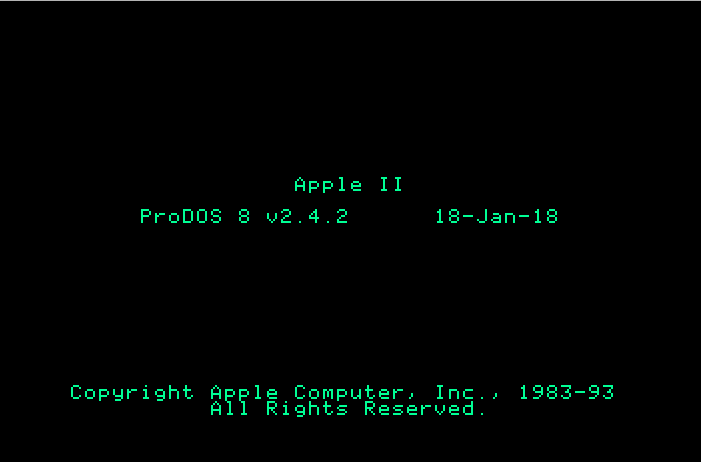
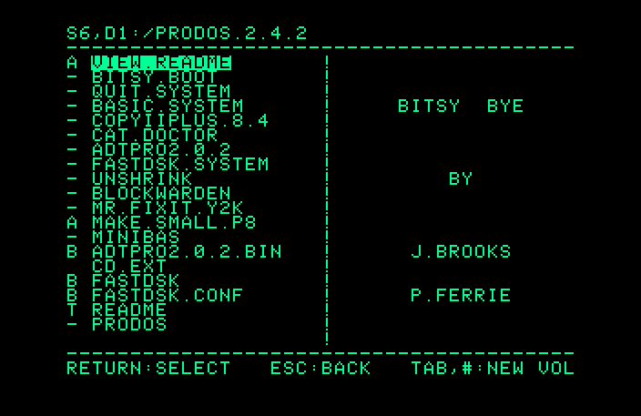

Announcing ProDOS 2.4.2 for all Apple II computers

ProDOS 2.4.2 is a minor release with bug fixes and updates. It replaces ProDOS 2.4 and ProDOS 2.4.1.
Bugs fixed:
- If a directory with more than 255 files was used, and then a different disk was used, a Bad Dir Error $51 was reported.
- Bitsy Bye was not compatible with the Appletalk Workstation card.
- Bitsy Bye was not compatible with the Mac LC Apple IIe card.
Updates:
- Thunderclock driver is updated for years 2018 – 2023
- ADT Pro v2.0.2
- Copy II Plus v8.4
- Added Cat Doctor’s extended utilities

If you’d like to help develop or test future versions, please contact me.
Enjoy.
-JB
John Brooks
Twitter: @JBrooksBSI
Download Disk Image: ProDOS_2_4_2.DSK
If you’d like to support my efforts to improve the Apple II, donations are welcome.
paypal_donation_button